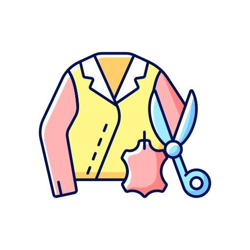
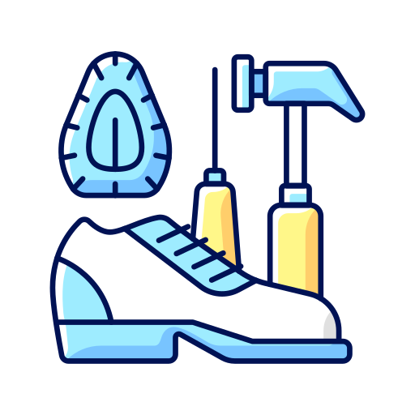
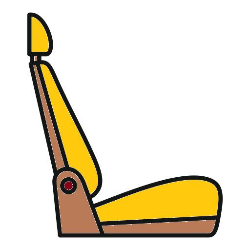
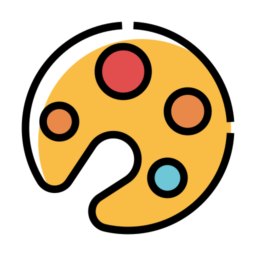

Nuestros Servicios
Expertos en restauración, tintura y renovación de artículos en cuero con acabados de alta calidad.

Restauración de cuero
Devolvemos el color, suavidad y resistencia a tus prendas y piezas favoritas.

Zapatos y zapatillas
Tintura y pulido profesional para que su calzado luzca como nuevo.

Muebles y accesorios
Renovamos color y textura, conservando el diseño original.

Cojinería de autos
Reparamos y renovamos asientos en cuero con acabados resistentes y duraderos.

Variedad de colores
Amplia paleta de tonos para elegir el que mejor se adapte a su estilo.

Envejecidos de calidad
Acabados artesanales que otorgan un look clásico y sofisticado.